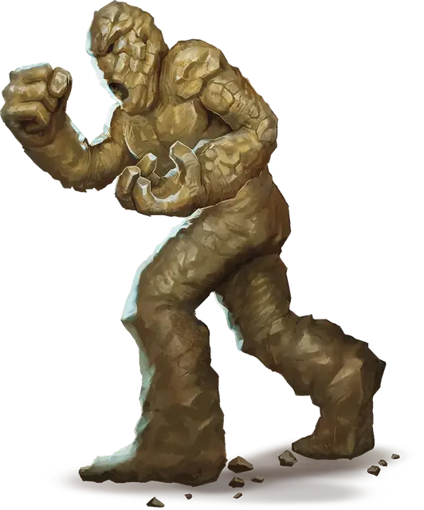

Глиняный голем
Clay Golem
Большой Конструкт, без мировоззрения

Класс Доспеха 14 (природный доспех)
Хиты 133 (14к10 + 56)
Скорость 20 футов
| мод | спас | ||
|---|---|---|---|
| СИЛ | 20 | +5 | +5 |
| ЛОВ | 9 | −1 | −1 |
| ТЕЛ | 18 | +4 | +4 |
| мод | спас | ||
|---|---|---|---|
| ИНТ | 3 | −4 | −4 |
| МДР | 8 | −1 | −1 |
| ХАР | 1 | −5 | −5 |
Иммунитет к урону кислота, психическая энергия, яд; дробящий, колющий, рубящий от немагических атак, кроме нанесённых адамантиновым оружием
Иммунитет к состояниям паралич, очарование, отравление, окаменение, истощение, испуг
Чувства тёмное зрение 60 футов, пассивное Восприятие 9
Языки понимает языки своего создателя, но не говорит.
Опасность 9 (5000 опыта)
Бонус мастерства +4
Особенности
Поглощение кислоты. Каждый раз, когда голем должен получить урон кислотой, он не получает урон, и вместо этого восстанавливает число хитов, равное причиняемому урону кислотой.
Берсерк. Каждый раз, когда голем начинает ход с 60 или меньше хитами, бросайте к6. Если выпадет «6», голем становится берсерком. Будучи берсерком, он в каждом своем ходу атакует ближайшее видимое существо. Если поблизости нет существ, к которым можно подойти и атаковать, голем атакует предмет, предпочитая предметы с размером меньше своего. Став берсерком, голем остается им, пока его не уничтожат или пока он не восстановит все свои хиты.
Неизменяемый облик. Голем обладает иммунитетом ко всем заклинаниям и эффектам, изменяющим его облик.
Сопротивление магии. Голем совершает с преимуществом спасброски от заклинаний и прочих магических эффектов.
Магическое оружие. Атаки оружием голема являются магическими.
Действия
Мультиатака. Голем совершает два Размашистых удара.
Размашистый удар. Рукопашная атака оружием: +8 к попаданию, досягаемость 5 футов, одна цель. Попадание: Дробящий урон 16 (2к10 + 5). Если цель — существо, она должна преуспеть в спасброске Телосложения Сл 15, иначе максимум её хитов уменьшится на количество, равное полученному урону. Цель умирает, если эта атака уменьшает максимум хитов до 0. Уменьшение длится до тех пор, пока не будет устранено заклинанием высшее восстановление [greater restoration] или подобной магией.
Спешка (перезарядка 5–6). До конца своего следующего хода голем магическим образом получает бонус +2 к КД, совершает с преимуществом спасброски Ловкости, и может использовать атаку Размашистым ударом бонусным действием.
Описание
«ЧЕМ ТВЕРЖЕ ФИЗИЧЕСКАЯ ФОРМА, ТЕМ КРЕПЧЕ ГОЛЕМ ПОМНИТ СВОЮ ЦЕЛЬ. ГЛИНЯНЫЕ МОГУТ БЫТЬ НЕМНОГО НЕРВНЫМИ».
— ПРЕДУПРЕЖДЕНИЕ ИЗ СПРАВОЧНИКА ПО ГЛИНЯНЫМ ГОЛЕМАМ
Этот громоздкий, изваянный из глины голем ростом выше обычного человека. Он сделан в форме человека, но пропорции не соблюдены.
Глиняные големы часто одарены священной целью жрецами. Однако, глина — слабый сосуд для жизненной силы. Если голем поврежден, стихийный дух, привязанный к нему, может вырваться на свободу. Такие големы приходят в ярость, круша все вокруг себя до тех пор, пока не будут уничтожены или полностью восстановлены.
См. дополнительно статью: «Бестиарий: Големы»